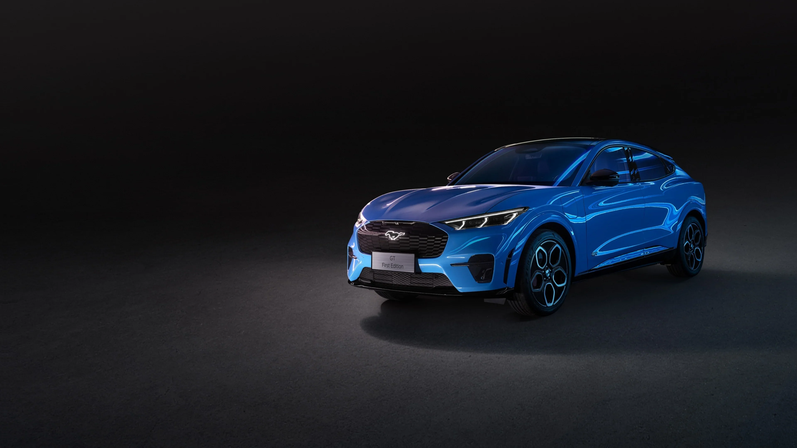
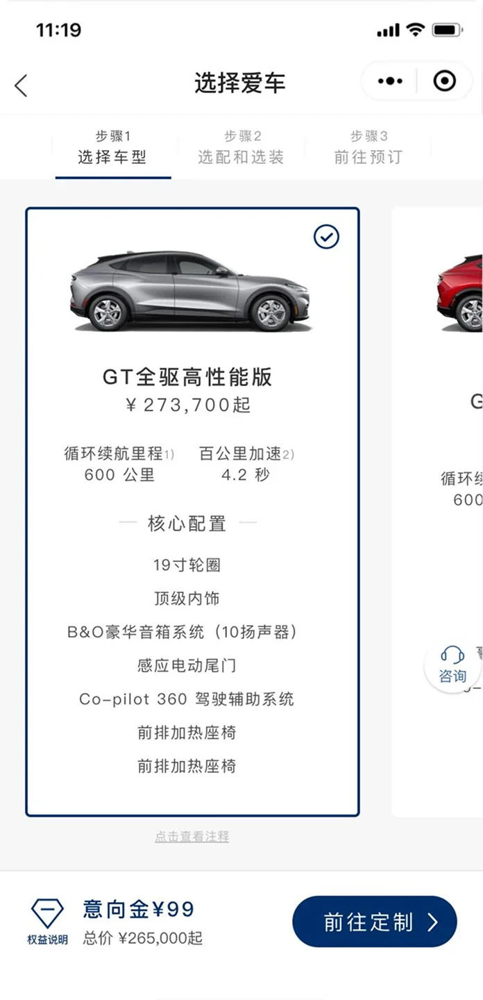
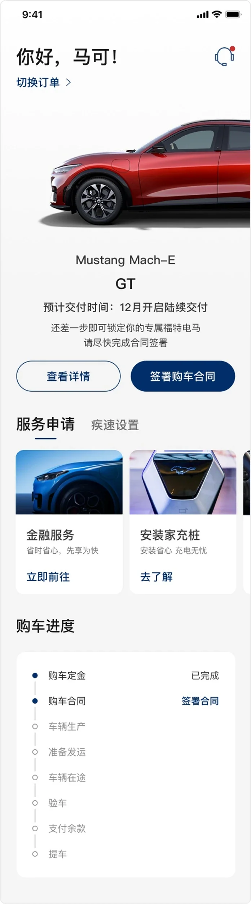

Mach-E 品牌官網
WEB承載品牌形象、車型介紹及完整購車服務，並提供訂單管理，也用於汽車銷售中心大屏預訂使用。

電動車平台設計
整合官網、微信小程序與 EV App，設計從線上預訂、購車到交車的完整流程，串連線上服務與線下體驗。
探索專案Mustang Mach-E 於 2021 年進入中國市場。透過用戶體驗設計，結合線上平台優勢與線下實體體驗，提供購車全鏈路服務。不同數位觸點各有側重，用戶在觸點切換時，資料與內容維持一致。
承載品牌形象、車型介紹及完整購車服務，並提供訂單管理，也用於汽車銷售中心大屏預訂使用。

從微信廣告曝光，觸達意向者，提供預約試駕、線上預訂與簡單訂單管理。

協助準車主完成交車手續，並且可以看到當前待辦事項與進度，逐步銜接車控教學與車主服務。
用戶從選擇車型、確認配置與支付意向金開始，再保留車輛、支付定金，最後透過數位產品完成交車手續。
01 / 意向金預訂
從車型比較、個性化選配、填寫資料到付款完成，讓用戶知道每一步的進度與下一步。
傳統購車與交車過程需多次前往經銷商。本次設計將訂車、定金、貸款申請、合同簽署與驗車等流程納入線上觸點，讓車主可以追蹤進度並完成後續手續。
透過用戶測試及訪談，了解中國用戶在購車流程中的潛在問題，並主持與福特數位團隊的 Workshop 定義核心功能，再以原型測試與設計系統推進介面。上線後，再依流程迭代延伸至交車功能。